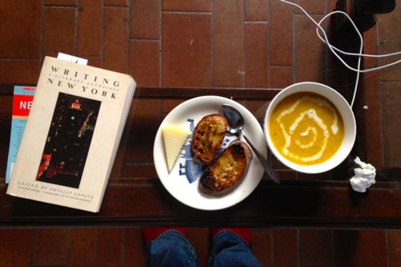

Joan Didion
Goodbye to All That

Writing New York and lunch.
Finding books set in New York City, about New York City is not difficult. More difficult is sifting through the cannon to decide what to read to quench my curiosity in this city where I’ll soon be moving. Luckily there is the library here in Rome and so I checked out Writing New York: A Literary Anthology, edited by Phillip Lopate, last week. I dove straight for “Goodbye to All That” by Joan Didion because you need only go a short way in the quest for NYC writing to bump into the title of this essay.
The essay was written years after Didion left New York for LA, in 1967, and is a somewhat nostalgic look back over her seven years in the city, her beginning and her ending. As I read I could see why the essay is often mentioned: Didion’s writing is clear and elegant, and at first the pleasure concentrates in her sentences. As I read on, I began to get the feeling that the essay is less about New York and more about being young in a city, any city moved to alone, a city that at once seems dazzling and just for you. It brought back my feelings when I was 23 and decided to stay in Rome.
…one of the mixed blessings of being twenty and twenty-one and even twenty-three is the conviction that nothing like this, all evidence to the contrary notwithstanding, has ever happened to anyone before.
I would climb Janiculum Hill and sit crosslegged on the high wall overlooking the city and breath it in, the city that seemed impossible to me for its terra cotta roofs and cobblestone streets and cacophony of new sounds and sensations, its incomprehensible ruins, churches, cornices, terraces, shuttered windows, domes, fountains, sculptures, its visible past. It was all new to me and I couldn’t imagine anything more wonderful. Crammed to the front of the 70 bus rumbling down the hill into Piazza Venezia, the sun’s angle shot the whole piazza and palazzi golden and I swooned for the spectacle of it and the thought that I, little me, could have a place here.
It would be a long while because, quite simply, I was in love with New York. I do not mean “love” in any colloquial way, I mean that I was in love with the city the way you love the first person who ever touches you and never love anyone quite that way again.
But the comparisons stop there. The end of Didion’s time in New York came on her before she realized it. She had left for LA with her husband for some weeks or months, and they ended up living there for 20 years. Ambiguity accents her last New York scenes. There seemed to be some kind of break down involved. If anything, she was no longer so very young.
Perhaps she used up what she loved of the city. Like Rome, when the everyday is filled with its particular beauty, this beauty becomes ordinary. I have tried, over these last years, to catch myself in moments of taking what I fell in love with for granted, the boughs of the umbrella pines against the impossible blue sky, the way the sun reflects golden off Santa Maria di Loreto’s window for a month in fall and spring, the peace and squawking parakeets in Celimontana, a soft sunset sky over the absorbing whitish marbles in the forum. And despite all this, I’m ready—not quite like Didion did—to say goodbye for a time.
· · · · · · · · · · · · · · · · · · · ·